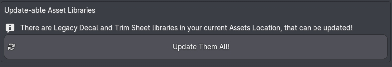
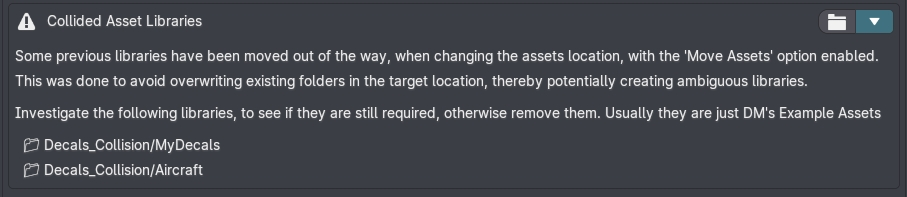
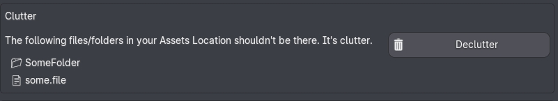
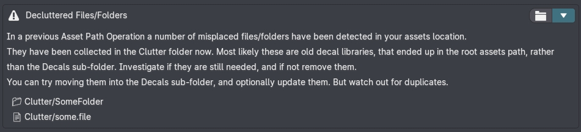
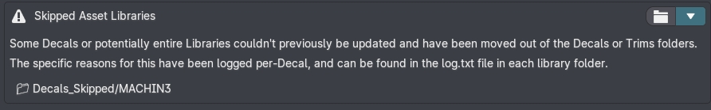
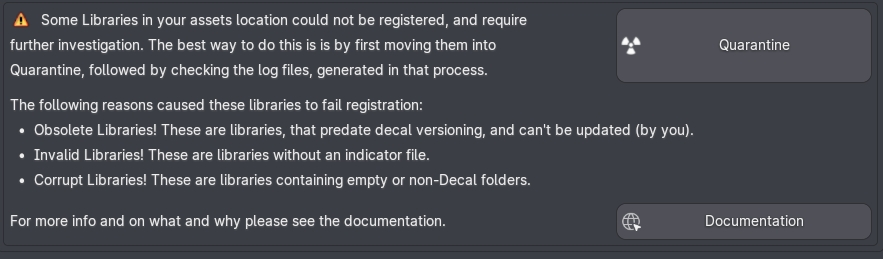
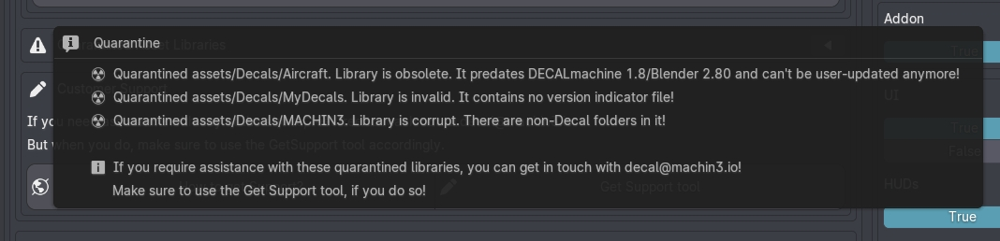
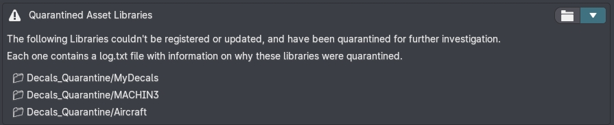
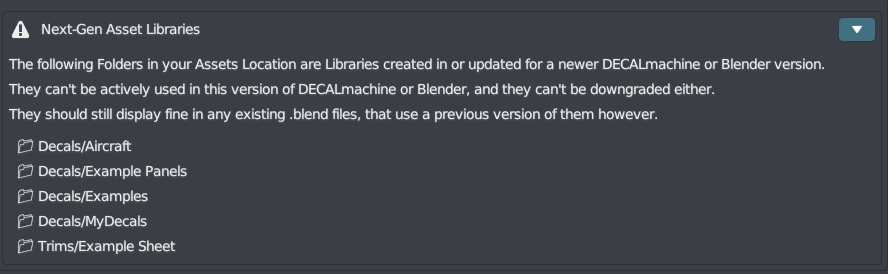
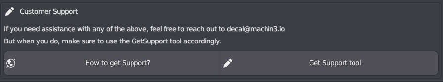

Addon Preferences
Failed Asset Registration
Only assets, so decal librarries, trimsheet libraries or atlases, that load successfully, will show up in the Registered Decal and Trimsheet Libraries or Decal Atlases lists accordingly.
But DECALmachine assets can sometimes fail to register or load properly for a number of reasons.
Some files and folders a user moves into the DECALmachine assets location may also be falsely considered an asset, when it's something else. So it's best practice to have only DECALmachine manage its assets location, and avoid manually interfering with that in the filebrowser.
DECALmachine classifies failed assets, and provides information and tooling to manage and solve any issues, and to simplify the product support process, should you require my help.
Legacy / Updateable / Fixable
Legacy assets will cause this box to appear, and accordingly expose the Batch Updater to conveniently update them.

Note
As of DECALmachine 2.10.0 ambiguous libraries, will also appear here, and can now be fixed and updated too.
Collision
If you change the assets locationas is recommended and you chose to move assets, then it's possible for folders in the old assets path, to collide with folders of the same name in the new assets location.
DECALmachine will avoid overwriting folders or mix their contents, and instead move collision-candidates into a dedicated _Collision folder, where you can investigate if you still need them or if they are duplicates that can be removed.

Clutter
Files and folders in the assets location, that simply shouldn't be there, are considered clutter.
If detected, this info box will appear, exposing the Declutter tool.

When decluttered, files and folders will be moved into a dedicated folder, where they can be invistigated and removed.

Skipped
If in a previous attempt to update assets, individual decals failed to update, for instance due to corrupt files, or a version mismatch, then those decals will be moved into a dedicated _Skipped folder.
Here the decals themselves, as well as a log file can be investigated and analyzed.

Quarantine
Some issues can be detected right away, without having to open individual decal asset blend files, as the Update Decal Library tool or the Batch Updater do.
These are obsolete libraries, invalid libraries, and corrupt libraries.

If detected, the Quarantine tool will be shown.
It will move these kinds of libararies into a dedicated _Quarantine folder, where they can be further investigated.
And just like for skipped decals, a log file will be created per-libaray as well.

A popup message will give you a quick overview.
And with quarantined assets present, the following info box will appear.

If you don't want to deal with this right now, you can collapse this info box to hide (most of) it.
You can also click the folder button, to open the assets location for further investigation in your file browser.
Next-Gen
Next-Gen assets are the opposite of Legacy assets. They don't match the expected version DECALmachine wants to see but unlike Legacy assets, they can't be updated, or rather downgraded.

You will see this info box, when you have updated assets in DECALmachine 2.9+ and Blender 4, and then go back to Blender 3.6 using the same assets location.
Nothing needs to be done about it.
Get Support
If any of the above are shown, then you will also have quick access to the Get Support tool.

Note
It is essential, that you use this tool. I won't be able to start working on your issue, until you use it, and you supply the log files and system_info.txt file the tool generates accordingly.